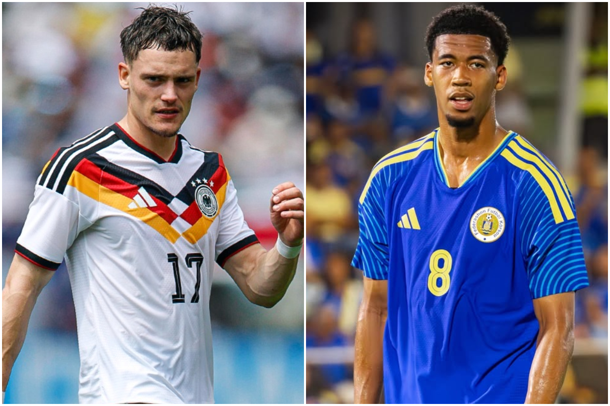
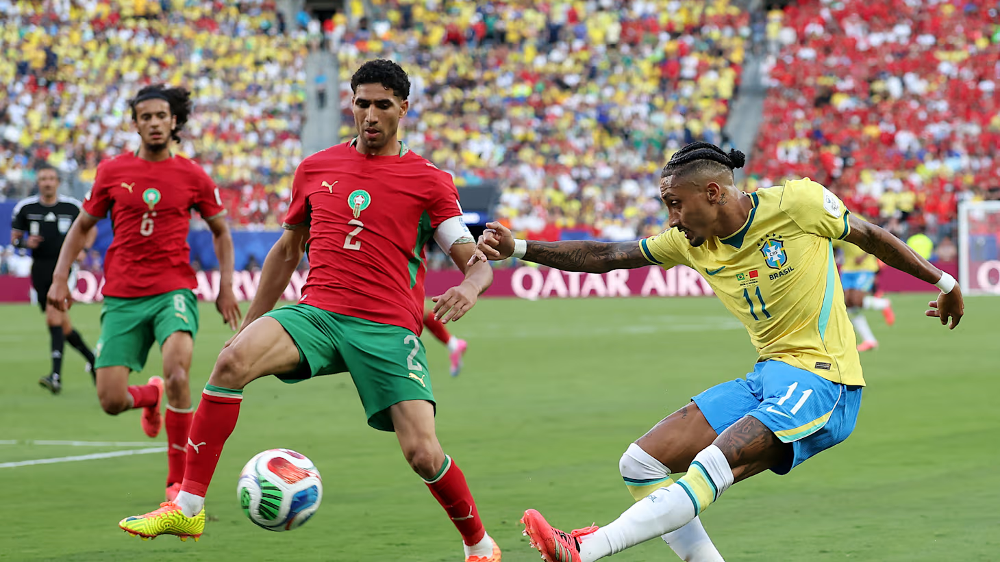

A Seleção Espanhola estreou na Copa do Mundo de 2026 com um empate sem gols diante de Cabo Verde pelo Grupo H, em partida realizada no dia 15 de junho. Apesar de ser considerada favorita, a equipe espanhola encontrou dificuldades para superar a forte marcação adversária.
Durante a partida, a Espanha teve maior posse de bola e criou diversas oportunidades de gol, mas não conseguiu converter as chances em vantagem no placar. O grande destaque do jogo foi o goleiro do Cabo Verde, Vozinha, de 40 anos.
Data e horário: 15 de junho de 2026 | 19h00
Autor: Gabriela Moura | News Today Sports
Esportes
Programa brasileiro para formar especialistas em IA

A Seleção Alemã começou sua campanha na Copa do Mundo de 2026 com uma vitória expressiva por 7 a 1 sobre Curaçao pelo Grupo E. A equipe demonstrou grande eficiência ofensiva e dominou a partida do início ao fim.
Com uma atuação coletiva de destaque, os alemães construíram o placar com facilidade e assumiram a liderança do grupo. O resultado reforça o favoritismo da Alemanha na competição e aumenta a expectativa dos torcedores para os próximos confrontos.
Data e horário: 14 de junho de 2026 | 21h00
Autor: Carlos Eduardo | News Today Sport
Esportes
Brasil empata com Marrocos em estreia da Copa do Mundo de 2026

A Seleção Brasileira estreou na Copa do Mundo de 2026 com um empate por 1 a 1 contra Marrocos pelo Grupo C, realizada em 13 de junho.
O Brasil abriu o placar no primeiro tempo, mas os marroquinos empataram antes do intervalo. Na segunda etapa, os brasileiros tiveram mais posse de bola e buscaram a vitória sem sucesso. Marrocos também criou chances perigosas em contra-ataques e quase virou a partida. Com o resultado, ambas as equipes somam um ponto e seguem na disputa pela classificação.